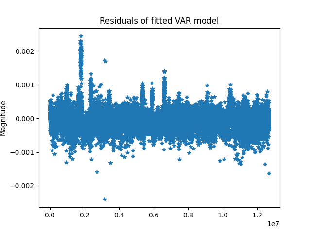
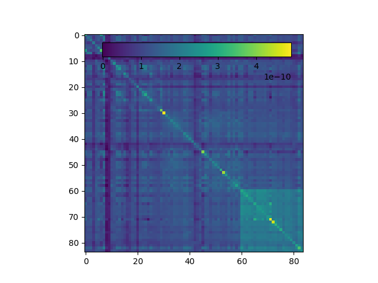
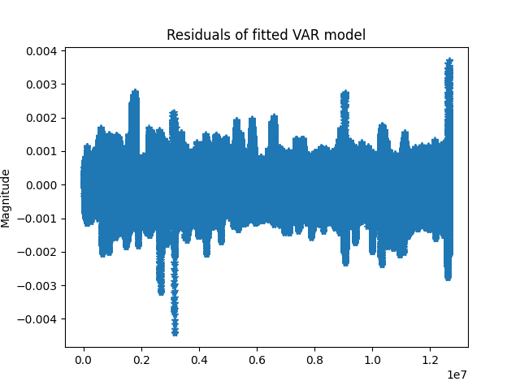
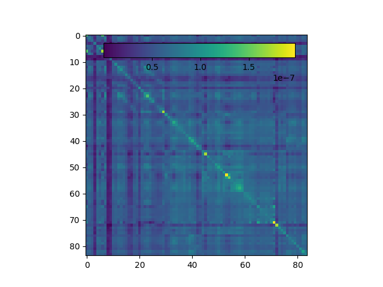

Note
Go to the end to download the full example code.
Compute vector autoregressive model (linear system)#
Compute a VAR (linear system) model from time-series activity [1] using a continuous iEEG recording.
In this example, we will demonstrate how to compute a VAR model with different statistical assumptions.
# Authors: Adam Li <adam2392@gmail.com>
#
# License: BSD (3-clause)
import matplotlib.pyplot as plt
import mne
import numpy as np
from mne import make_fixed_length_epochs
from mne_bids import BIDSPath, read_raw_bids
from mne_connectivity import vector_auto_regression
Load the data#
Here, we first download an ECoG dataset that was recorded from a patient with epilepsy. To facilitate loading the data, we use mne-bids.
Then, we will do some basic filtering and preprocessing using MNE-Python.
# paths to mne datasets - sample ECoG
bids_root = mne.datasets.epilepsy_ecog.data_path()
# first define the BIDS path
bids_path = BIDSPath(
root=bids_root,
subject="pt1",
session="presurgery",
task="ictal",
datatype="ieeg",
extension="vhdr",
)
# Then we'll use it to load in the sample dataset. Here we use a format (iEEG)
# that is only available in MNE-BIDS 0.7+, so it will emit a warning on
# versions <= 0.6
raw = read_raw_bids(bids_path=bids_path, verbose=False)
line_freq = raw.info["line_freq"]
print(f"Data has a power line frequency at {line_freq}.")
# Pick only the ECoG channels, removing the ECG channels
raw.pick_types(ecog=True)
# Load the data
raw.load_data()
# Then we remove line frequency interference
raw.notch_filter(line_freq)
# drop bad channels
raw.drop_channels(raw.info["bads"])
0%| | 0.00/88.2M [00:00<?, ?B/s]
5%|█▊ | 4.24M/88.2M [00:00<00:01, 42.4MB/s]
18%|██████▌ | 15.5M/88.2M [00:00<00:00, 83.8MB/s]
30%|███████████▏ | 26.7M/88.2M [00:00<00:00, 96.6MB/s]
42%|███████████████▍ | 36.7M/88.2M [00:00<00:00, 96.7MB/s]
53%|███████████████████▍ | 46.4M/88.2M [00:00<00:00, 90.7MB/s]
63%|███████████████████████▎ | 55.5M/88.2M [00:00<00:00, 76.6MB/s]
73%|██████████████████████████▊ | 63.9M/88.2M [00:00<00:00, 78.7MB/s]
83%|██████████████████████████████▊ | 73.5M/88.2M [00:00<00:00, 83.5MB/s]
93%|██████████████████████████████████▍ | 82.1M/88.2M [00:00<00:00, 83.8MB/s]
0%| | 0.00/88.2M [00:00<?, ?B/s]
100%|██████████████████████████████████████| 88.2M/88.2M [00:00<00:00, 400GB/s]
Download complete in 04s (84.1 MB)
/home/circleci/python_env/lib/python3.12/site-packages/mne_bids/dig.py:678: RuntimeWarning: DigMontage is only a subset of info. There are 3 channel positions not present in the DigMontage. The channels missing from the montage are:
['RQ1', 'RQ2', 'N/A'].
Consider using inst.rename_channels to match the montage nomenclature, or inst.set_channel_types if these are not EEG channels, or use the on_missing parameter if the channel positions are allowed to be unknown in your analyses.
raw.set_montage(montage, on_missing="warn")
/home/circleci/project/examples/dynamic/mne_var_connectivity.py:52: RuntimeWarning: Unable to map the following column(s) to MNE:
outcome: S
engel_score: 1.0
ilae_score: 2.0
date_follow_up: n/a
ethnicity: 0.0
years_follow_up: 3.0
site: NIH
clinical_complexity: 1.0
raw = read_raw_bids(bids_path=bids_path, verbose=False)
Data has a power line frequency at 60.0.
NOTE: pick_types() is a legacy function. New code should use inst.pick(...).
Reading 0 ... 269079 = 0.000 ... 269.079 secs...
Filtering raw data in 1 contiguous segment
Setting up band-stop filter from 59 - 61 Hz
FIR filter parameters
---------------------
Designing a one-pass, zero-phase, non-causal bandstop filter:
- Windowed time-domain design (firwin) method
- Hamming window with 0.0194 passband ripple and 53 dB stopband attenuation
- Lower passband edge: 59.35
- Lower transition bandwidth: 0.50 Hz (-6 dB cutoff frequency: 59.10 Hz)
- Upper passband edge: 60.65 Hz
- Upper transition bandwidth: 0.50 Hz (-6 dB cutoff frequency: 60.90 Hz)
- Filter length: 6601 samples (6.601 s)
Crop the data for this example#
We find the onset time of the seizure and remove all data after that time. In this example, we are only interested in analyzing the interictal (non-seizure) data period.
One might be interested in analyzing the seizure period also, which we leave as an exercise for our readers!
# Find the annotated events
events, event_id = mne.events_from_annotations(raw)
# get sample at which seizure starts
onset_id = event_id["onset"]
onset_idx = np.argwhere(events[:, 2] == onset_id)
onset_sample = events[onset_idx, 0].squeeze()
onset_sec = onset_sample / raw.info["sfreq"]
# remove all data after the seizure onset
raw = raw.crop(tmin=0, tmax=onset_sec, include_tmax=False)
Used Annotations descriptions: [np.str_('AD1-4, ATT1,2'), np.str_('AST1,3'), np.str_('G16'), np.str_('PD'), np.str_('SLT1-3'), np.str_('offset'), np.str_('onset')]
Create Windows of Data (Epochs) Using MNE-Python#
We have a continuous iEEG snapshot that is about 60 seconds long (after cropping). We would like to estimate a VAR model over a sliding window of 500 milliseconds with a 250 millisecond step size.
We can use mne.make_fixed_length_epochs to create an Epochs data structure
representing this sliding window.
epochs = make_fixed_length_epochs(raw=raw, duration=0.5, overlap=0.25)
times = epochs.times
ch_names = epochs.ch_names
print(epochs)
print(epochs.times)
print(epochs.event_id)
print(epochs.events)
Not setting metadata
302 matching events found
No baseline correction applied
0 projection items activated
<Epochs | 302 events (good & bad), 0 – 0.499 s (baseline off), ~102 KiB, data not loaded,
'1': 302>
[0. 0.001 0.002 0.003 0.004 0.005 0.006 0.007 0.008 0.009 0.01 0.011
0.012 0.013 0.014 0.015 0.016 0.017 0.018 0.019 0.02 0.021 0.022 0.023
0.024 0.025 0.026 0.027 0.028 0.029 0.03 0.031 0.032 0.033 0.034 0.035
0.036 0.037 0.038 0.039 0.04 0.041 0.042 0.043 0.044 0.045 0.046 0.047
0.048 0.049 0.05 0.051 0.052 0.053 0.054 0.055 0.056 0.057 0.058 0.059
0.06 0.061 0.062 0.063 0.064 0.065 0.066 0.067 0.068 0.069 0.07 0.071
0.072 0.073 0.074 0.075 0.076 0.077 0.078 0.079 0.08 0.081 0.082 0.083
0.084 0.085 0.086 0.087 0.088 0.089 0.09 0.091 0.092 0.093 0.094 0.095
0.096 0.097 0.098 0.099 0.1 0.101 0.102 0.103 0.104 0.105 0.106 0.107
0.108 0.109 0.11 0.111 0.112 0.113 0.114 0.115 0.116 0.117 0.118 0.119
0.12 0.121 0.122 0.123 0.124 0.125 0.126 0.127 0.128 0.129 0.13 0.131
0.132 0.133 0.134 0.135 0.136 0.137 0.138 0.139 0.14 0.141 0.142 0.143
0.144 0.145 0.146 0.147 0.148 0.149 0.15 0.151 0.152 0.153 0.154 0.155
0.156 0.157 0.158 0.159 0.16 0.161 0.162 0.163 0.164 0.165 0.166 0.167
0.168 0.169 0.17 0.171 0.172 0.173 0.174 0.175 0.176 0.177 0.178 0.179
0.18 0.181 0.182 0.183 0.184 0.185 0.186 0.187 0.188 0.189 0.19 0.191
0.192 0.193 0.194 0.195 0.196 0.197 0.198 0.199 0.2 0.201 0.202 0.203
0.204 0.205 0.206 0.207 0.208 0.209 0.21 0.211 0.212 0.213 0.214 0.215
0.216 0.217 0.218 0.219 0.22 0.221 0.222 0.223 0.224 0.225 0.226 0.227
0.228 0.229 0.23 0.231 0.232 0.233 0.234 0.235 0.236 0.237 0.238 0.239
0.24 0.241 0.242 0.243 0.244 0.245 0.246 0.247 0.248 0.249 0.25 0.251
0.252 0.253 0.254 0.255 0.256 0.257 0.258 0.259 0.26 0.261 0.262 0.263
0.264 0.265 0.266 0.267 0.268 0.269 0.27 0.271 0.272 0.273 0.274 0.275
0.276 0.277 0.278 0.279 0.28 0.281 0.282 0.283 0.284 0.285 0.286 0.287
0.288 0.289 0.29 0.291 0.292 0.293 0.294 0.295 0.296 0.297 0.298 0.299
0.3 0.301 0.302 0.303 0.304 0.305 0.306 0.307 0.308 0.309 0.31 0.311
0.312 0.313 0.314 0.315 0.316 0.317 0.318 0.319 0.32 0.321 0.322 0.323
0.324 0.325 0.326 0.327 0.328 0.329 0.33 0.331 0.332 0.333 0.334 0.335
0.336 0.337 0.338 0.339 0.34 0.341 0.342 0.343 0.344 0.345 0.346 0.347
0.348 0.349 0.35 0.351 0.352 0.353 0.354 0.355 0.356 0.357 0.358 0.359
0.36 0.361 0.362 0.363 0.364 0.365 0.366 0.367 0.368 0.369 0.37 0.371
0.372 0.373 0.374 0.375 0.376 0.377 0.378 0.379 0.38 0.381 0.382 0.383
0.384 0.385 0.386 0.387 0.388 0.389 0.39 0.391 0.392 0.393 0.394 0.395
0.396 0.397 0.398 0.399 0.4 0.401 0.402 0.403 0.404 0.405 0.406 0.407
0.408 0.409 0.41 0.411 0.412 0.413 0.414 0.415 0.416 0.417 0.418 0.419
0.42 0.421 0.422 0.423 0.424 0.425 0.426 0.427 0.428 0.429 0.43 0.431
0.432 0.433 0.434 0.435 0.436 0.437 0.438 0.439 0.44 0.441 0.442 0.443
0.444 0.445 0.446 0.447 0.448 0.449 0.45 0.451 0.452 0.453 0.454 0.455
0.456 0.457 0.458 0.459 0.46 0.461 0.462 0.463 0.464 0.465 0.466 0.467
0.468 0.469 0.47 0.471 0.472 0.473 0.474 0.475 0.476 0.477 0.478 0.479
0.48 0.481 0.482 0.483 0.484 0.485 0.486 0.487 0.488 0.489 0.49 0.491
0.492 0.493 0.494 0.495 0.496 0.497 0.498 0.499]
{'1': 1}
[[ 0 0 1]
[ 250 0 1]
[ 500 0 1]
[ 750 0 1]
[ 1000 0 1]
[ 1250 0 1]
[ 1500 0 1]
[ 1750 0 1]
[ 2000 0 1]
[ 2250 0 1]
[ 2500 0 1]
[ 2750 0 1]
[ 3000 0 1]
[ 3250 0 1]
[ 3500 0 1]
[ 3750 0 1]
[ 4000 0 1]
[ 4250 0 1]
[ 4500 0 1]
[ 4750 0 1]
[ 5000 0 1]
[ 5250 0 1]
[ 5500 0 1]
[ 5750 0 1]
[ 6000 0 1]
[ 6250 0 1]
[ 6500 0 1]
[ 6750 0 1]
[ 7000 0 1]
[ 7250 0 1]
[ 7500 0 1]
[ 7750 0 1]
[ 8000 0 1]
[ 8250 0 1]
[ 8500 0 1]
[ 8750 0 1]
[ 9000 0 1]
[ 9250 0 1]
[ 9500 0 1]
[ 9750 0 1]
[10000 0 1]
[10250 0 1]
[10500 0 1]
[10750 0 1]
[11000 0 1]
[11250 0 1]
[11500 0 1]
[11750 0 1]
[12000 0 1]
[12250 0 1]
[12500 0 1]
[12750 0 1]
[13000 0 1]
[13250 0 1]
[13500 0 1]
[13750 0 1]
[14000 0 1]
[14250 0 1]
[14500 0 1]
[14750 0 1]
[15000 0 1]
[15250 0 1]
[15500 0 1]
[15750 0 1]
[16000 0 1]
[16250 0 1]
[16500 0 1]
[16750 0 1]
[17000 0 1]
[17250 0 1]
[17500 0 1]
[17750 0 1]
[18000 0 1]
[18250 0 1]
[18500 0 1]
[18750 0 1]
[19000 0 1]
[19250 0 1]
[19500 0 1]
[19750 0 1]
[20000 0 1]
[20250 0 1]
[20500 0 1]
[20750 0 1]
[21000 0 1]
[21250 0 1]
[21500 0 1]
[21750 0 1]
[22000 0 1]
[22250 0 1]
[22500 0 1]
[22750 0 1]
[23000 0 1]
[23250 0 1]
[23500 0 1]
[23750 0 1]
[24000 0 1]
[24250 0 1]
[24500 0 1]
[24750 0 1]
[25000 0 1]
[25250 0 1]
[25500 0 1]
[25750 0 1]
[26000 0 1]
[26250 0 1]
[26500 0 1]
[26750 0 1]
[27000 0 1]
[27250 0 1]
[27500 0 1]
[27750 0 1]
[28000 0 1]
[28250 0 1]
[28500 0 1]
[28750 0 1]
[29000 0 1]
[29250 0 1]
[29500 0 1]
[29750 0 1]
[30000 0 1]
[30250 0 1]
[30500 0 1]
[30750 0 1]
[31000 0 1]
[31250 0 1]
[31500 0 1]
[31750 0 1]
[32000 0 1]
[32250 0 1]
[32500 0 1]
[32750 0 1]
[33000 0 1]
[33250 0 1]
[33500 0 1]
[33750 0 1]
[34000 0 1]
[34250 0 1]
[34500 0 1]
[34750 0 1]
[35000 0 1]
[35250 0 1]
[35500 0 1]
[35750 0 1]
[36000 0 1]
[36250 0 1]
[36500 0 1]
[36750 0 1]
[37000 0 1]
[37250 0 1]
[37500 0 1]
[37750 0 1]
[38000 0 1]
[38250 0 1]
[38500 0 1]
[38750 0 1]
[39000 0 1]
[39250 0 1]
[39500 0 1]
[39750 0 1]
[40000 0 1]
[40250 0 1]
[40500 0 1]
[40750 0 1]
[41000 0 1]
[41250 0 1]
[41500 0 1]
[41750 0 1]
[42000 0 1]
[42250 0 1]
[42500 0 1]
[42750 0 1]
[43000 0 1]
[43250 0 1]
[43500 0 1]
[43750 0 1]
[44000 0 1]
[44250 0 1]
[44500 0 1]
[44750 0 1]
[45000 0 1]
[45250 0 1]
[45500 0 1]
[45750 0 1]
[46000 0 1]
[46250 0 1]
[46500 0 1]
[46750 0 1]
[47000 0 1]
[47250 0 1]
[47500 0 1]
[47750 0 1]
[48000 0 1]
[48250 0 1]
[48500 0 1]
[48750 0 1]
[49000 0 1]
[49250 0 1]
[49500 0 1]
[49750 0 1]
[50000 0 1]
[50250 0 1]
[50500 0 1]
[50750 0 1]
[51000 0 1]
[51250 0 1]
[51500 0 1]
[51750 0 1]
[52000 0 1]
[52250 0 1]
[52500 0 1]
[52750 0 1]
[53000 0 1]
[53250 0 1]
[53500 0 1]
[53750 0 1]
[54000 0 1]
[54250 0 1]
[54500 0 1]
[54750 0 1]
[55000 0 1]
[55250 0 1]
[55500 0 1]
[55750 0 1]
[56000 0 1]
[56250 0 1]
[56500 0 1]
[56750 0 1]
[57000 0 1]
[57250 0 1]
[57500 0 1]
[57750 0 1]
[58000 0 1]
[58250 0 1]
[58500 0 1]
[58750 0 1]
[59000 0 1]
[59250 0 1]
[59500 0 1]
[59750 0 1]
[60000 0 1]
[60250 0 1]
[60500 0 1]
[60750 0 1]
[61000 0 1]
[61250 0 1]
[61500 0 1]
[61750 0 1]
[62000 0 1]
[62250 0 1]
[62500 0 1]
[62750 0 1]
[63000 0 1]
[63250 0 1]
[63500 0 1]
[63750 0 1]
[64000 0 1]
[64250 0 1]
[64500 0 1]
[64750 0 1]
[65000 0 1]
[65250 0 1]
[65500 0 1]
[65750 0 1]
[66000 0 1]
[66250 0 1]
[66500 0 1]
[66750 0 1]
[67000 0 1]
[67250 0 1]
[67500 0 1]
[67750 0 1]
[68000 0 1]
[68250 0 1]
[68500 0 1]
[68750 0 1]
[69000 0 1]
[69250 0 1]
[69500 0 1]
[69750 0 1]
[70000 0 1]
[70250 0 1]
[70500 0 1]
[70750 0 1]
[71000 0 1]
[71250 0 1]
[71500 0 1]
[71750 0 1]
[72000 0 1]
[72250 0 1]
[72500 0 1]
[72750 0 1]
[73000 0 1]
[73250 0 1]
[73500 0 1]
[73750 0 1]
[74000 0 1]
[74250 0 1]
[74500 0 1]
[74750 0 1]
[75000 0 1]
[75250 0 1]]
Compute the VAR model for all windows#
Now, we are ready to compute our VAR model. We will compute a VAR model for each Epoch and return an EpochConnectivity data structure. Each Epoch here represents a separate VAR model. Taken together, these represent a time-varying linear system.
conn = vector_auto_regression(data=epochs.get_data(), times=times, names=ch_names)
# this returns a connectivity structure over time
print(conn)
Using data from preloaded Raw for 302 events and 500 original time points ...
0 bad epochs dropped
0%| | 0/302 [00:00<?, ?it/s]
6%|▌ | 18/302 [00:00<00:01, 174.58it/s]
12%|█▏ | 36/302 [00:00<00:01, 174.83it/s]
18%|█▊ | 54/302 [00:00<00:01, 175.43it/s]
24%|██▍ | 72/302 [00:00<00:01, 174.87it/s]
30%|██▉ | 90/302 [00:00<00:01, 175.02it/s]
36%|███▌ | 108/302 [00:00<00:01, 174.20it/s]
42%|████▏ | 126/302 [00:00<00:01, 173.83it/s]
48%|████▊ | 144/302 [00:00<00:00, 174.73it/s]
54%|█████▎ | 162/302 [00:00<00:00, 174.22it/s]
60%|█████▉ | 180/302 [00:01<00:00, 174.28it/s]
66%|██████▌ | 198/302 [00:01<00:00, 173.73it/s]
72%|███████▏ | 216/302 [00:01<00:00, 174.10it/s]
77%|███████▋ | 234/302 [00:01<00:00, 174.04it/s]
83%|████████▎ | 252/302 [00:01<00:00, 172.71it/s]
89%|████████▉ | 270/302 [00:01<00:00, 173.27it/s]
95%|█████████▌| 288/302 [00:01<00:00, 173.88it/s]
100%|██████████| 302/302 [00:01<00:00, 174.11it/s]
<EpochConnectivity | n_epochs : 302, , nave : 302, nodes, n_estimated : 84, 7056, ~16.3 MiB>
Evaluate the VAR model fit#
We can now evaluate the model fit by computing the residuals of the model and visualizing them. In addition, we can evaluate the covariance of the residuals. This will compute an independent VAR model for each epoch (window) of data.
predicted_data = conn.predict(epochs.get_data())
# compute residuals
residuals = epochs.get_data() - predicted_data
# visualize the residuals
fig, ax = plt.subplots()
ax.plot(residuals.flatten(), "*")
ax.set(title="Residuals of fitted VAR model", ylabel="Magnitude")
# compute the covariance of the residuals
model_order = conn.attrs.get("model_order")
t = residuals.shape[0]
sampled_residuals = np.concatenate(
np.split(residuals[:, :, model_order:], t, 0), axis=2
).squeeze(0)
rescov = np.cov(sampled_residuals)
# Next, we visualize the covariance of residuals.
# Here we will see that because we use ordinary
# least-squares as an estimation method, the residuals
# should come with low covariances.
fig, ax = plt.subplots()
cax = fig.add_axes([0.27, 0.8, 0.5, 0.05])
im = ax.imshow(rescov, cmap="viridis", aspect="equal", interpolation="none")
fig.colorbar(im, cax=cax, orientation="horizontal")
- 
- 
Using data from preloaded Raw for 302 events and 500 original time points ...
Using data from preloaded Raw for 302 events and 500 original time points ...
<matplotlib.colorbar.Colorbar object at 0x7437ac87a6c0>
Compute one VAR model using all epochs#
By setting model='dynamic', we instead treat each Epoch as a sample of
the same VAR model and thus we only estimate one VAR model. One might do this
when one suspects the data is stationary and one VAR model represents all
epochs.
conn = vector_auto_regression(
data=epochs.get_data(), times=times, names=ch_names, model="avg-epochs"
)
# this returns a connectivity structure over time
print(conn)
Using data from preloaded Raw for 302 events and 500 original time points ...
<Connectivity | , nave : 302, nodes, n_estimated : 84, 7056, ~76 KiB>
Evaluate model fit again#
We can now evaluate the model fit again as done earlier. This model fit will of course have higher residuals than before as we are only fitting 1 VAR model to all the epochs.
first_epoch = epochs.get_data()[0, ...]
predicted_data = conn.predict(first_epoch)
# compute residuals
residuals = epochs.get_data() - predicted_data
# visualize the residuals
fig, ax = plt.subplots()
ax.plot(residuals.flatten(), "*")
ax.set(title="Residuals of fitted VAR model", ylabel="Magnitude")
# compute the covariance of the residuals
model_order = conn.attrs.get("model_order")
t = residuals.shape[0]
sampled_residuals = np.concatenate(
np.split(residuals[:, :, model_order:], t, 0), axis=2
).squeeze(0)
rescov = np.cov(sampled_residuals)
# Next, we visualize the covariance of residuals as before.
# Here we will see a similar trend with the covariances as
# with the covariances for time-varying VAR model.
fig, ax = plt.subplots()
cax = fig.add_axes([0.27, 0.8, 0.5, 0.05])
im = ax.imshow(rescov, cmap="viridis", aspect="equal", interpolation="none")
fig.colorbar(im, cax=cax, orientation="horizontal")
- 
- 
Using data from preloaded Raw for 302 events and 500 original time points ...
Using data from preloaded Raw for 302 events and 500 original time points ...
<matplotlib.colorbar.Colorbar object at 0x74378ad02690>
Total running time of the script: (0 minutes 36.404 seconds)